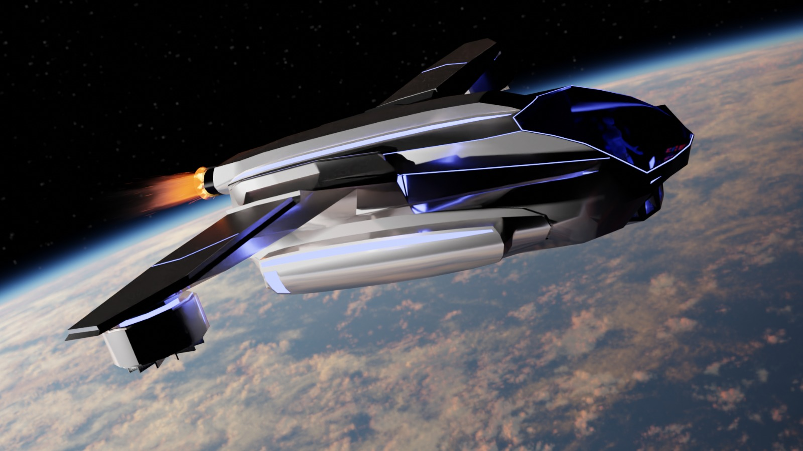

Common Grounds
introduction
The inhabitants of Earth acknowledge the challenges facing their planet and express gratitude for the presence of a visitor, presumably an extraterrestrial entity, to help find sustainable solutions. A universal translator has been provided for effective communication, and facilities are equipped with the same technology.
This was the introduction to the project, short summary, all the media design classes of fontys were gathered in the first week of the semester. Everyone was assigned a planet, mine being kelt-9-B
With the process of natural selection. and no one really wanting to do this project, I was assigned leader of my planet group
Background story
KELT-9b is a large, hot exoplanet, over twice the size
of Jupiter. Tidally locked to its star, it's losing its
atmosphere quickly due to intense radiation.As of 2022,
it's the hottest known exoplanet, with scorching
temperatures causing molecules to break apart on the
dayside and reform on the cooler nightside.
As
the
Health & recreation we came up with how our "species"
could live on this planet. We live around the planet in
the sky, we fuel our starlite floating colonies with the
gasses from the planet below, Starlite was able to
withstand attack by a laser beam that could produce a
temperature of 10,000 degrees. Live demonstrations also
showed how an egg coated in Starlite could remain raw,
and cold enough to be picked up with a bare hand, even
after five minutes in the flame of a blowtorch.
 Art by megin
Art by megin
The
keltarans are bioluminescence blue beings that can self
sustain by meditation. this makes the Keltarans
self-sustaining, not needing food or water as their own
body produces the necessary components to stay alive,
the mediation is required to keep this process going
smoothly.
We wrote this down into a lovely story you
can read here! Background story if you
really feel like it, you must be very bored, its very
long.
Travel poster
To convince "humans" that our planet was nice we had to
make a poster to advertise it, depicted here on the
right --->
Prototype
After establishing our planets background story, we had
to create some sort of prototype that would help
"humans" and their planet improve, My department chose
to fix the problem
"Ensure healthy lives and promote well-being for all at all ages"
we decided to do this via unethical ways. Mainly
transforming everyon into well "us". by transforming
everyone into keltarans, inequality would be solved.
The prototyp we decided to make was a 3D model of the
machines used for this transformation, a drawing of how
the keltarans would look, and a 3D model of the ship we
arrived to earth on 
Journey video
Finally it was time, to conclude the project and combine everything, we decided to focus on our prototype storyline. You know the whole, taking over the planet by converting all humans. I edited this video, using shameless stock footage, its about the general idea
Poster to advertise your department, made by Megin for the health & recreation department